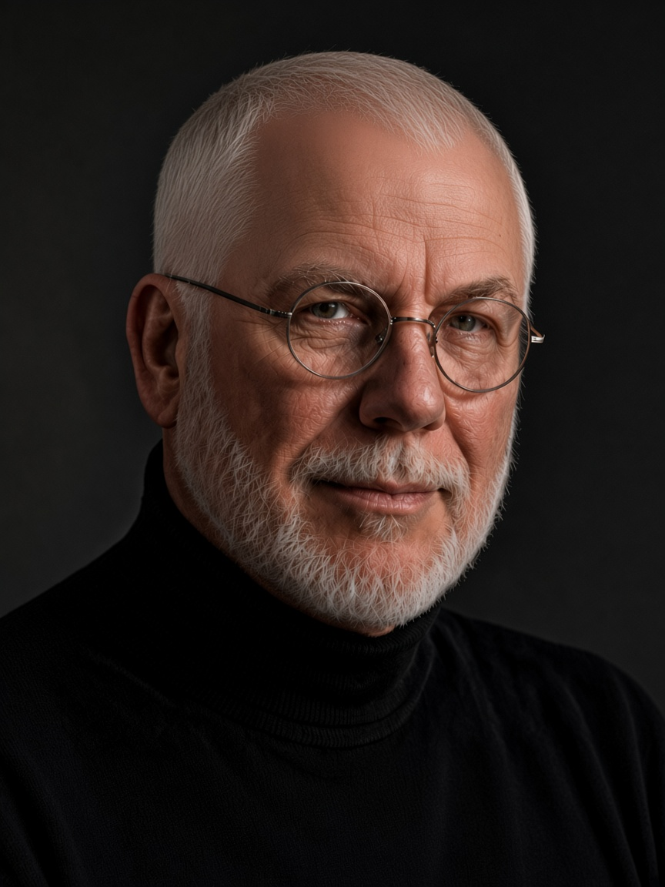

Curriculum vitae
Keith Byne
Learning Experience Designer · Instructional Designer · Training Programme Director
Espartinas, Seville · British citizen · native English · EU work authorised
Also Basildon, Essex (born Essex)
keith.byne@hotmail.co.uk
·
keith-byne-portfolio.vercel.app

01Profile
Programme director, instructional designer, and educational software builder with 30 years designing adult learning, corporate language programmes, and digital training systems. Combines visual communication (Fine Art; professional graphic design for enterprise brands) with course architecture, teacher-as-trainer delivery, and hands-on web/SaaS product development. Since 2015, Director of Universal English S.L., running curriculum, budgets, teams, and hybrid/online delivery. Open to EU remote employment, a Spanish B2B / autónomo contract, or being taken on through REPORT-O-MATIC LTD, a British registered company.
02Core expertise
Instructional design and curriculum
- Course and materials design for adult, professional, and institutional audiences
- Action mapping / performance-first design
- ESP/EAP programmes for enterprise accounts
- Hybrid and fully online learning design; web-based learning paths
Visual communication
- BA (Hons) Fine Art
- Graphic design, illustration, and CAD-CAM (1984–1996), including Microsoft and Virgin Airlines
- Canva and PowerPoint job aids and stakeholder decks
- Inkscape for vector artwork
Programme operations
- Director and Director of Studies, Universal English S.L. (2015–present): budgets, teams, marketing, resource management
- Staff interviewing and onboarding; needs analysis and hybrid onboarding frameworks
- High-volume centre operations (Ardmore; management team built for 200, flexed to 400+ at peak)
Learning technology
- Educational SaaS and new product design
- Wix and custom web platforms for autonomous learning (including iPALABRA)
- Live online: Zoom 2019–2021, then Skype, now Teams; digital resource training for teaching staff
- LMS operations: Google Classroom (Edmodo from 2015 until that platform closed)
03Professional experience
Universal English S.L. — Director and Director of Studies
Tomares, Spain · 2015–present
- Own curriculum, course development, staffing, budgets, marketing, and web content for an adult training organisation.
- Designed and run international online technology training for teachers, plus face-to-face trainer programmes; ongoing content work with Teachertrainingvideos.com / Russell Stannard.
- Put live classes on Zoom from 2019 until 2021 so teachers and adult learners could be trained quickly, then Skype, now Teams; on Covid-19 closure, trained the teaching staff in 3 hours and continued every class with no missed session.
- Ran the academy LMS on Edmodo from 2015, then Google Classroom when Edmodo closed.
- Introduced online classes, then hybrid classes, ahead of local competitors; built iPALABRA free learning websites and wrote content for private ESL platforms.
- Specified and developed educational SaaS including Report-O-Matic (REPORT-O-MATIC LTD): multi-level access, reports, registers, timetables, resource allocation; 13-language UI and report output. Also FireList-O-Matic: phone-first residential-school accountability with Night Log, FIRE live muster, and drawable site zones.
Ardmore Summer School — Centre administrator / acting centre management
Hertfordshire, UK · seasonal, alongside Universal English
- During Covid-19, researched, created, and deployed educational content for language learners on ArdmoreX, the organisation’s new remote learning platform.
- Worked in a large operational team on intensive programmes; the management team was built for 200 students and flexed up to more than 400 at peak after another company at the same university collapsed, following geopolitical unrest in the Middle East.
- Open brief as Administrator under the Centre Manager during the volume flex: supported Rooming, Activity, Academic, and Centre Management while holding administration, whose task definitions changed during the employment period.
- Day-to-day contact with visiting-institution agents and representatives sending groups to the centre.
- Supported the Director of Studies with digital recording systems and staff support; first aid and safeguarding.
English Connection — Teacher and recruitment interviewer
Bormujos, Spain · 2013–2015
- Delivered adult English programmes and interviewed incoming teaching staff.
Teachertrainingvideos.com — Materials developer and web-based instructor
UK (remote) · 2002–2013
- Contributed to digital learning content to brief, including New Standard English (China) and the BBC’s Get into Spanish.
- Designed web-based learning using tools such as Wix for ESL, EAP, and ESP.
- Delivered live online instruction via Skype.
English Club — ESP/EAP instructor and major-accounts specialist
Paris, France · 2000–2002
- Designed and delivered English for Specific and Academic Purposes for enterprise clients.
- Owned customer relations for major accounts, including Microsoft, Usinor, Eurosport, and Sorecom.
CLIC International House — Teacher and digital resource trainer
Seville, Spain · 1996–2000
- Classroom instruction plus digital-resource training for teaching staff.
- Began a long professional collaboration with Russell Stannard (then Director of Studies).
Graphic design studios — Graphic designer
UK · 1984–1996
- Graphic design, illustration, and CAD-CAM design/manufacture.
- Client-facing problem-solving for accounts including Microsoft and Virgin Airlines.
04Education and credentials
- BA (Hons) Fine Art — Norwich School of Art, Norfolk, UK (1993–1996)
- Foundation in Art & Design — Thurrock Technical College, Essex, UK
- Cambridge CELTA — International House Seville, Spain
- Cert. TESOL — Trinity College London, UK
05Right to work
Based in Espartinas, Seville. Authorised to work for an EU employer remotely without visa sponsorship. Can invoice as autónomo / B2B, or through REPORT-O-MATIC LTD, a British registered company, where the employer cannot hire on payroll.